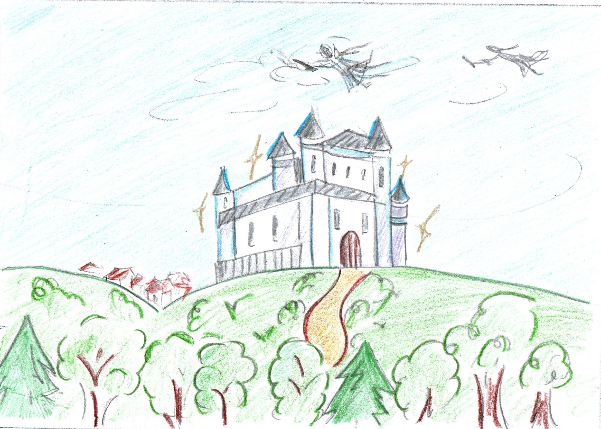
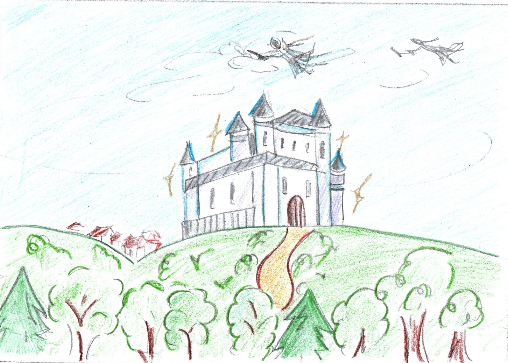

En busca del color
La animación En busca del color se trata del espiritu de una reina malvada (Linross) que quito el color del Reino Cormo y un hada emprende una misión para devolverle el color y la armonía al pueblo. Se realizo un guión técnico, storyboard, personajes, objetos y escenarios. Se compone de 4 escenas. Desarollada en equipo integrado por Estefanía Elizabeth García Badilla, Ivan Cruz Contreras y Diana Laura Coyac De Yta.


 
